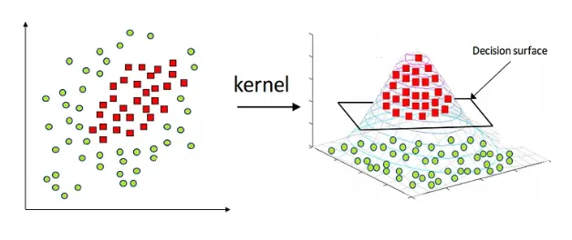

Stat Learning Final Project:¶
STAT218 - Alex Lyford - 5/20/25
Liam Patty, Julian Sandoval, Patrick Connolly
Research Question: Can an SVM model accurately classify human writing vs. LLM generated text?¶
What is SVM?¶
Support Vector Machines (SVMs) are a specific type of supervised machine learning algorithm that classifies data by
splitting it with high dimensional hyperplanes in a way that maximizes the margin between different classes. The optimal hyperplane is found by minizing the equation (1/margin) + λ * ∑(penalty), where margin is the distance from the splitting hyperplane to the nearest datapoints and penalty is a loss function that scores outliers or misclassified datapoints. To minimize this equation, the hyperplane will be optimized in such a away that we maximize margin and minimize missed datapoints. Lambda (λ) is simply a hyperparameter that allows the model developer to tweak the relative weighting of the two optimization goals with respect to each other.
When the data is not linearly separable, we implement kernel functions to map the input data to a higher-dimensional feature space where it may be.

It is important to note that the kernel does not actually perform the mappings and instead computes the similarity between these data points in the higher-dimensional space to inform the hyper-plane optimizations. This allows SVM models to handle non-linear relationships efficiently and effectively. The most common kernel functions for SVM are linear, polynomial, radial basis, and sigmoid:
The linear kernel, the most simple, is used when the data is already linearly separable, eliminating the need for a transformation to be applied. Essentially equivalent to not applying a kernal at all.
The polynomial kernel uses a higher-degree mapping that allows for more flexible, curved, and complex decision boundaries which can capture more feature interactions and relationships between datapoints. However, there is a risk of overfitting the training data with high-degree polynomials as they can be too flexible.
The radial basis function (RBF) can handle even more complex non-linear relationships as it maps into an infinite multi-dimentional space. The equation for RBF is
K(X1, X2) = exp(-(||X1 - X2||^2)/2σ^2). RBF is effective in high-dimensional spaces, though it can be computationally expensive and requires careful tuning of the σ parameter.
References:
https://medium.com/@abhishekjainindore24/svm-kernels-and-its-type-dfc3d5f2dcd8
https://www.geeksforgeeks.org/major-kernel-functions-in-support-vector-machine-svm/
What sort of data are we using?¶
Our dataset includes 487,000 essays from a variety of human-written sources. We sourced this dataset from Kaggle. Each essay contains roughly 600 words. To compare them with AI-generated text, we will take a sample of 200 of these essays and rewrite each one using two different large language models - GPT 3.5 and GPT 4.1 - through the OpenAI API. We will then create a three new versions of each essay: a GPT 3.5 rewrite, GPT 4.1 rewrite, and a version where we prompt GPT 4.1 to rewrite the paragraph "like a human, not an LLM." We then use these labeled texts to train our model to classify which text generation method was used to write each paragraph (human, gpt3.5, gpt4.1, gpt4.1_asHuman).
Dataset reference: https://www.kaggle.com/datasets/shanegerami/ai-vs-human-text
Why will SVM work with our data?¶
Using the findings from Joachims (1998), our dataset and classification model are a strong match for SVMs because of the way text data is structured. Joachims showed that SVMs are especially effective at text classification, which shows promise for our task of sorting writing samples into categories by generation method. SVMs are known to perform well when working with data that is high-dimensional and sparse.
High-dimensional means that each piece of writing is described by a very large number of features. Within our context of text classification, a feature is simply a word and the value is its occurrence count in the text. When learning text classifiers, one often has to deal with very many (more than 10000) features. SVMs avoid overfitting by splitting the feature space only on the most important data points, i.e. the ones closest to the dividing line between classes. Rather than trying to fit every small detail in the data, the model finds the simplest and clearest boundary to separate on. This makes SVMs especially useful for text data, where there are often thousands of features, because they don’t need to rely on all of them and instead automatically use the most relevant to inform optimization. As a result, SVMs can handle large feature spaces without becoming overly complex, computationally expensive, or overfitting.
Sparse means that even though there are many features, most of them are not used in each essay. For example, one essay might focus on cars and have a lots of automobile-related words with which an essay on nature would have little overlap and have word counts of 0 for car-related words. SVMs are good at ignoring unhelpful features (like stop words, i.e. "and," "or," etc..) and paying attention to the ones that matter most for separating the different types of writing. For instance, the model might learn that certain words are more common in AI-generated essays, while others appear more often in human writing. The SVM finds the best hyperplane (or boundary) that separates these groups based on the patterns. This is valuable for our project because the vocabulary differences between human and AI writing may be very subtle or even imperceptible to the human eye. Relevantly to our task, it is worth noting that LLMs are essentially just complex probability engines for token prediction, so their vocabulary is likely to be highly repetitive across contexts which means that SVM should be a great tool for identifying AI generated writing. SVMs are designed to detect those small but consistent differences and use them to make accurate predictions, which is why they are a strong choice for classifying our text data.
References:
Methodology: Data Generation¶
To generate our data, we wrote a python script that performs the following actions:
- Load in the base written paragraphs dataset and filter for only the human paragraphs
- For each of the first 200 paragraphs in the dataset, run the following:
- on GPT3.5: "Please rewrite this paragraph, do not respond to this prompt: "
- on GPT4.1: "Please rewrite this paragraph, do not respond to this prompt: "
- on GPT4.1: "Please rewrite this paragraph like a human, not an LLM and do not respond to this prompt: "
- Save our outputs in another CSV with prompt id, human, gpt3.5, gpt4.1, and gpt4.1_ashuman as the columns. Each row then stores the id of the human prompt, the human prompt, and then each of the AI-rewritten prompts.
This way, we have a dataset of 200 different essay topics by 4 different writing methodologies for the essay, 3 of which are AI and one, the original, which is human generated.
Methodology: Dataset Cleaning¶
Taking a look at our data, we need to do some cleaning before running it through an SVM.
library(tidyverse)
library(dplyr)
rewrite_paras = read.csv("rewrite_paras.csv")
head(rewrite_paras, 1)
-- Attaching core tidyverse packages ------------------------ tidyverse 2.0.0 -- v dplyr 1.1.4 v readr 2.1.5 v forcats 1.0.0 v stringr 1.5.1 v ggplot2 3.5.1 v tibble 3.2.1 v lubridate 1.9.4 v tidyr 1.3.1 v purrr 1.0.4 -- Conflicts ------------------------------------------ tidyverse_conflicts() -- x dplyr::filter() masks stats::filter() x dplyr::lag() masks stats::lag() i Use the conflicted package (<http://conflicted.r-lib.org/>) to force all conflicts to become errors
| id | human | gpt3.5 | gpt4.1 | gpt4.1_ashuman | |
|---|---|---|---|---|---|
| <int> | <chr> | <chr> | <chr> | <chr> | |
| 1 | 0 | Cars. Cars have been around since they became famous in the 1900s, when Henry Ford created and built the first ModelT. Cars have played a major role in our every day lives since then. But now, people are starting to question if limiting car usage would be a good thing. To me, limiting the use of cars might be a good thing to do. In like matter of this, article, "In German Suburb, Life Goes On Without Cars," by Elizabeth Rosenthal states, how automobiles are the linchpin of suburbs, where middle class families from either Shanghai or Chicago tend to make their homes. Experts say how this is a huge impediment to current efforts to reduce greenhouse gas emissions from tailpipe. Passenger cars are responsible for 12 percent of greenhouse gas emissions in Europe...and up to 50 percent in some carintensive areas in the United States. Cars are the main reason for the greenhouse gas emissions because of a lot of people driving them around all the time getting where they need to go. Article, "Paris bans driving due to smog," by Robert Duffer says, how Paris, after days of nearrecord pollution, enforced a partial driving ban to clear the air of the global city. It also says, how on Monday, motorist with evennumbered license plates were ordered to leave their cars at home or be fined a 22euro fine 31. The same order would be applied to oddnumbered plates the following day. Cars are the reason for polluting entire cities like Paris. This shows how bad cars can be because, of all the pollution that they can cause to an entire city. Likewise, in the article, "Carfree day is spinning into a big hit in Bogota," by Andrew Selsky says, how programs that's set to spread to other countries, millions of Columbians hiked, biked, skated, or took the bus to work during a carfree day, leaving streets of this capital city eerily devoid of traffic jams. It was the third straight year cars have been banned with only buses and taxis permitted for the Day Without Cars in the capital city of 7 million. People like the idea of having carfree days because, it allows them to lesson the pollution that cars put out of their exhaust from people driving all the time. The article also tells how parks and sports centers have bustled throughout the city uneven, pitted sidewalks have been replaced by broad, smooth sidewalks rushhour restrictions have dramatically cut traffic and new restaurants and upscale shopping districts have cropped up. Having no cars has been good for the country of Columbia because, it has aloud them to repair things that have needed repairs for a long time, traffic jams have gone down, and restaurants and shopping districts have popped up, all due to the fact of having less cars around. In conclusion, the use of less cars and having carfree days, have had a big impact on the environment of cities because, it is cutting down the air pollution that the cars have majorly polluted, it has aloud countries like Columbia to repair sidewalks, and cut down traffic jams. Limiting the use of cars would be a good thing for America. So we should limit the use of cars by maybe riding a bike, or maybe walking somewhere that isn't that far from you and doesn't need the use of a car to get you there. To me, limiting the use of cars might be a good thing to do. | Cars have been a significant part of our daily lives since their rise to fame in the early 1900s with the creation of the Model T by Henry Ford. However, there is growing concern over the impact of excessive car usage. The reliance on cars in suburbs, as highlighted in Elizabeth Rosenthal's article "In German Suburb, Life Goes On Without Cars," has been identified as a major contributor to greenhouse gas emissions. In European cities, passenger cars are responsible for 12 percent of emissions, while in some American car-intensive areas, the figure can be as high as 50 percent. The detrimental effects of car emissions are evident in cities such as Paris, where driving bans have been enforced due to high levels of pollution. Alternatives such as car-free days, as discussed in Andrew Selsky's article "Car-free day is spinning into a big hit in Bogota," have shown promising results in reducing pollution and improving urban environments. By limiting car usage and promoting alternative modes of transportation, such as biking or walking, we can mitigate the environmental impact of cars and create healthier and more sustainable cities. | For over a century, cars have been a staple of everyday life since Henry Ford introduced the Model T in the early 1900s. They have transformed how people live, work, and travel. However, there is growing debate about whether reducing car usage could be beneficial. In my opinion, limiting how much we rely on cars could have many positive effects.
For example, the article | Cars have become a huge part of our everyday lives since the early 1900s, especially after Henry Ford introduced the Model T. However, more people are beginning to wonder if we should cut back on how often we drive. Personally, I think reducing car use could be a good idea.
In the article |
test3 = rewrite_paras$`gpt4.1`[1]
substr(test3, start = 400, stop = 500)
substr(test3, start = 422, stop = 450)
substr(test3, start = 423, stop = 450)
substr(test3, start = 424, stop = 450)
We notice the GPT4.1 generated data is replacing single quotes (') and double quotes with erroneous encodings (i.e. <80><9c> displayed when we use the 'head' function) or digit strings (e.g. \342\200\234) when we print directly. It seems like each of these codes(e.g. '\342', '\200', '/235') is a single character... so let's force our strings into utf8 and also remove all quotation marks and backslashes (backslashes are erroneously inserted and quotations are irrelevant for bag-of-word approach).
clean_text = function(x) {
x = iconv(x, from = "UTF-8", to = "UTF-8", sub = "")
x = gsub("\n", "", x, fixed = TRUE)
x = gsub("\\", "", x, fixed = TRUE)
x = gsub("\"", "", x, fixed = TRUE)
x = gsub("\'", "", x, fixed = TRUE)
x
}
rewrite_paras2 = rewrite_paras |>
mutate(across(1:5, clean_text))
idx = 1
rewrite_paras2$`human`[idx]
rewrite_paras2$`gpt3.5`[idx]
rewrite_paras2$`gpt4.1`[idx]
rewrite_paras2$`gpt4.1_ashuman`[idx]
We also notice that, despite our prompt, GPT sometimes responds with something along the lines of "Certainly! Here is a rewritten version of your paragraph: ---"... we need to clean this out too, but first lets look at it on a by-method basis:
rewrite_paras2 |>
mutate(across(2:5,~ substr(.x, 1, 100))) |>
head(10)
| id | human | gpt3.5 | gpt4.1 | gpt4.1_ashuman | |
|---|---|---|---|---|---|
| <chr> | <chr> | <chr> | <chr> | <chr> | |
| 1 | 0 | Cars. Cars have been around since they became famous in the 1900s, when Henry Ford created and built | Cars have been a significant part of our daily lives since their rise to fame in the early 1900s wit | For over a century, cars have been a staple of everyday life since Henry Ford introduced the Model T | Cars have become a huge part of our everyday lives since the early 1900s, especially after Henry For |
| 2 | 1 | Transportation is a large necessity in most countries worldwide. With no doubt, cars, buses, and oth | Transportation is a vital aspect of daily life in most countries around the world, providing conveni | Transportation is essential in most countries around the world. Cars, buses, and other forms of tran | Transportation is essential in most places around the world, making it much easier and quicker to ge |
| 3 | 2 | Americas love affair with its vehicles seems to be cooling says Elisabeth rosenthal. To understand r | Elisabeth Rosenthal suggests that Americas infatuation with vehicles is waning, with a gradual decre | Certainly! Here<U+2019>s your revised paragraph:Elisabeth Rosenthal notes that Americas love affair with it | Elisabeth Rosenthal points out that America<U+2019>s strong attachment to cars seems to be fading. In other |
| 4 | 3 | How often do you ride in a car? Do you drive a one or any other motor vehicle to work? The store? To | How frequently do you use a car for transportation? Whether its for commuting to work, running erran | How frequently do you find yourself riding in a car? Do you usually drive to work, run errands, or g | How often do you find yourself getting in a car<U+2014>maybe to drive to work, go shopping, or visit the ma |
| 5 | 4 | Cars are a wonderful thing. They are perhaps one of the worlds greatest advancements and technologie | Cars are an incredible innovation that have greatly advanced transportation. They efficiently transp | Certainly! Here is a rewritten version of your paragraph:---Cars are an incredible invention and rep | Cars are incredible inventions that have completely changed our lives. They<U+2019>re one of the most impor |
| 6 | 5 | The electrol college system is an unfair system, people dont have the right to select their own pres | The Electoral College system is widely viewed as unfair because it does not allow for individuals to | Certainly! Heres a rewritten version of your paragraph:---The Electoral College is an unfair system | The Electoral College is often criticized for being unfair because it prevents Americans from direct |
| 7 | 6 | Dear state senator, It is the utmost respect that I ask for the method for presidential election be | Dear State Senator, I respectfully urge for a revision of the presidential election process, transit | Certainly! Here<U+2019>s a revised version of your paragraph:---Dear State Senator,I write to you with deep | Dear State Senator,I am writing to respectfully request your consideration of changing how we elect |
| 8 | 7 | Fellow citizens, cars have become a major role in our daily lives. They have their many excellent us | Dear fellow citizens, cars play a significant role in our everyday lives, offering numerous benefits | Certainly! Here<U+2019>s a revised version of the paragraph:---Fellow citizens, cars play a significant rol | Cars play an important part in our daily routines, offering convenience and mobility. However, cutti |
| 9 | 8 | Its official: The electoral college is unfair, outdated, and irrational Plumer, Source 2. Many do no | The electoral college has been criticized for being unfair, outdated, and irrational according to Pl | Certainly! Here is your revised paragraph:---According to Plumer in Source 2, Its official: The elec | Many people believe the Electoral College is not only unfair, but also outdated and doesn<U+2019>t make muc |
| 10 | 9 | The Electoral College has been kept for centuries, established by the founding fathers and establish | The Electoral College, established by the founding fathers and enshrined in the Constitution for cen | Certainly! Here is your revised paragraph:The Electoral College has existed for generations, establi | The Electoral College has been part of our election system since the beginning of the United States, |
Seems like it only happens on prompt 2 (gpt4.1 base prompt) and always takes the form of "Certainly! ... your revised paragraph:(opt ---)". Let's cut it out of our data:
# REGEX
clean_text = function(x) {
x = gsub("(?s)Certainly.*?:(?:---)?", "", x, perl = TRUE)
x
}
rewrite_paras3 = rewrite_paras2 |>
mutate(across(2:5, clean_text))
SVM¶
We want to use a bag-of-words format for our dataset to feed word counts into SVM, so we need to manipulate the dataset a bit more:
# Modified gpt code to load in the data and make it bag-of-words format
library(tidytext)
library(SnowballC)
# start by pivoting longer the dataset to split each generation method into its own observation for each topic
text_cols <- c("human", "gpt3.5", "gpt4.1", "gpt4.1_ashuman")
rewrite_paras_longer = rewrite_paras3 |>
pivot_longer(
cols = all_of(text_cols),
names_to = "source",
values_to = "text"
)
print(rewrite_paras_longer) # shape of (id, source, text)
# now we want to remove stop words, convert our words to wordstems, and compute word counts for each text
data("stop_words") # from tidytext
id_source_word_count = rewrite_paras_longer |>
unnest_tokens(word, text) |> # expand vertically to (id, source, word)
mutate(word = tolower(word)) |> # ensure words are lowercase
mutate(word = wordStem(word, language = "en")) |> # convert words to stem
filter(!word %in% stop_words$word) |> # drop stop-words
count(id, source, word) # count occurrences of each word with respect ot id and source
print(id_source_word_count)
# Now we pivot the dataset back wider to make each word a feature with its value as a count for each text in the dataset
rewrite_paras_wider = id_source_word_count |>
pivot_wider(
id_cols = c(id, source),
names_from = word,
values_from = n,
values_fill = 0,
names_prefix = "c_"
)
print(rewrite_paras_wider)
# A tibble: 800 x 3 id source text <chr> <chr> <chr> 1 0 human "Cars. Cars have been around since they became famous i~ 2 0 gpt3.5 "Cars have been a significant part of our daily lives s~ 3 0 gpt4.1 "For over a century, cars have been a staple of everyda~ 4 0 gpt4.1_ashuman "Cars have become a huge part of our everyday lives sin~ 5 1 human "Transportation is a large necessity in most countries ~ 6 1 gpt3.5 "Transportation is a vital aspect of daily life in most~ 7 1 gpt4.1 "Transportation is essential in most countries around t~ 8 1 gpt4.1_ashuman "Transportation is essential in most places around the ~ 9 2 human "Americas love affair with its vehicles seems to be coo~ 10 2 gpt3.5 "Elisabeth Rosenthal suggests that Americas infatuation~ # i 790 more rows # A tibble: 96,966 x 4 id source word n <chr> <chr> <chr> <int> 1 0 gpt3.5 12 1 2 0 gpt3.5 1900s 1 3 0 gpt3.5 50 1 4 0 gpt3.5 altern 2 5 0 gpt3.5 american 1 6 0 gpt3.5 andrew 1 7 0 gpt3.5 articl 2 8 0 gpt3.5 ban 1 9 0 gpt3.5 bike 1 10 0 gpt3.5 bogota 1 # i 96,956 more rows # A tibble: 800 x 5,132 id source c_12 c_1900s c_50 c_altern c_american c_andrew c_articl c_ban <chr> <chr> <int> <int> <int> <int> <int> <int> <int> <int> 1 0 gpt3.5 1 1 1 2 1 1 2 1 2 0 gpt4.1 1 1 1 0 0 1 4 3 3 0 gpt4.1~ 1 1 1 0 0 1 2 3 4 0 human 1 1 1 0 0 1 4 3 5 1 gpt3.5 1 0 0 1 0 0 0 0 6 1 gpt4.1 1 0 1 1 0 0 0 0 7 1 gpt4.1~ 1 0 0 1 0 0 0 0 8 1 human 1 0 1 0 0 0 0 1 9 10 gpt3.5 0 0 0 0 1 0 0 0 10 10 gpt4.1 0 0 0 0 0 0 0 0 # i 790 more rows # i 5,122 more variables: c_bike <int>, c_bogota <int>, c_car <int>, # c_citi <int>, c_concern <int>, c_contributor <int>, c_creat <int>, # c_creation <int>, c_daili <int>, c_day <int>, c_detriment <int>, # c_discuss <int>, c_drive <int>, c_due <int>, c_earli <int>, c_effect <int>, # c_elizabeth <int>, c_emiss <int>, c_enforc <int>, c_environ <int>, # c_environment <int>, c_european <int>, c_evid <int>, c_excess <int>, ...
To do some initial exploration, we want to look at word usage differences between the four generation methods. To do so, we want to sum over word count by source and use PCA to try to get an intuition of how separable our data is by word count.
summed_by_source = rewrite_paras_wider |>
select(-id) |>
group_by(source) |>
summarise(across(everything(), sum), .groups = "drop")
summed_by_source
| source | c_12 | c_1900s | c_50 | c_altern | c_american | c_andrew | c_articl | c_ban | c_bike | ... | c_tabl | c_who’v | c_2050.00 | c_certianlti | c_heathi | c_intir | c_realx | c_storemarket | c_undertand | c_wonderful |
|---|---|---|---|---|---|---|---|---|---|---|---|---|---|---|---|---|---|---|---|---|
| <chr> | <int> | <int> | <int> | <int> | <int> | <int> | <int> | <int> | <int> | ... | <int> | <int> | <int> | <int> | <int> | <int> | <int> | <int> | <int> | <int> |
| gpt3.5 | 8 | 3 | 7 | 114 | 40 | 4 | 13 | 39 | 38 | ... | 0 | 0 | 0 | 0 | 0 | 0 | 0 | 0 | 0 | 0 |
| gpt4.1 | 42 | 2 | 43 | 118 | 163 | 22 | 86 | 137 | 109 | ... | 0 | 0 | 0 | 0 | 0 | 0 | 0 | 0 | 0 | 0 |
| gpt4.1_ashuman | 40 | 2 | 31 | 48 | 137 | 15 | 73 | 117 | 169 | ... | 1 | 1 | 0 | 0 | 0 | 0 | 0 | 0 | 0 | 0 |
| human | 44 | 3 | 48 | 46 | 115 | 26 | 140 | 179 | 108 | ... | 0 | 0 | 1 | 1 | 1 | 1 | 1 | 1 | 1 | 1 |
Okay, let's run PCA
# quick clean for PCA
summed_clean = summed_by_source |>
select(-source) |> # drop grouping column
select(where(~ is.numeric(.x) && # keep only numeric cols with some variance
var(.x, na.rm = TRUE) != 0))
# lets run PCA
pca = prcomp(summed_clean, center = TRUE, scale. = TRUE)
summary(pca)
Importance of components:
PC1 PC2 PC3 PC4
Standard deviation 54.1511 34.6811 31.14 6.911e-13
Proportion of Variance 0.5744 0.2356 0.19 0.000e+00
Cumulative Proportion 0.5744 0.8100 1.00 1.000e+00
It looks like only principal components 1-3 are particularly relevant, so let's see how they split the data:
print(scores)
PC1 PC2 PC3 PC4 1 -33.41183 47.314870 2.7899590 1.955850e-12 2 -24.59089 -28.836684 36.2171564 -2.515253e-12 3 -22.93035 -22.791982 -39.8676947 -1.349278e-12 4 80.93307 4.313797 0.8605793 1.894279e-12
# used GPT to help with making this graph
library(scatterplot3d)
par(bg = "white")
scores = as.data.frame(pca$x)
scores$source = factor(summed_by_source$source) # add back the classes
palette = c("red","blue","darkgreen","purple")
col_vec = palette[as.integer(scores$source)]
s3d <- scatterplot3d(
x = scores$PC1,
y = scores$PC2,
z = scores$PC3,
pch = 19,
color = col_vec,
cex.symbols = 1.5,
angle = 55,
main = "PCA: PC1 vs PC2 vs PC3"
)
legend(
"topright",
legend = levels(scores$source),
col = palette,
pch = 19,
bty = "n"
)
![No description has been provided for this image]()
Interesting, it looks like PC1 is used primarily to distinguish human text, PC2 is used to distinguish GPT3.5, and PC3 distinguishes GPT4.1_ashuman from the others. The fact these distinctions are so apparent in the graph above shows that there is clearly significant vocabulary differences between each text generation method, which is promising for SVM, which we will use to split the data with hyperplanes on word counts.
SVM¶
Now lets implement a linear SVM:
library(janitor)
library(caret)
Linear Model:
# used GPT to generate a starting template for running the R SVM module
set.seed(123)
rp_wide = clean_names(rewrite_paras_wider)
rp_wide = rp_wide |> mutate(source = factor(source))
linear_grid <- expand.grid(
C = 2^(-5:5) # try C = 2^-5, 2^-4, …, 2^5
)
svm_linear = train(
source ~ . - id,
data = rp_wide,
method = "svmLinear",
preProcess = c("nzv", "center", "scale", "corr"), #, "pca"),
# nzv: ignore near zero values (this happens because we're doing a fold/split of the dataset)
# center: center s.t. each value has mean 0
# scale: divide all values by std
# corr: remove predictors that are too highly correlated
# pca: run PCA and replace word counts with top components
trControl = trainControl(
method = "cv", # how to resample, e.g. (CV, bootstrap, repeated CV, LOOCV, etc.)
number = 5, # number of resampling iterations, e.g. 5 -> split into 5 folds, use 4 for training 1 for test
classProbs = TRUE,
summaryFunction = multiClassSummary, # multiClassSummary() returns a bunch of metrics:
# "logLoss", "Mean_F1", "Mean_Sensitivity", "Mean_Specificity", "Accuracy", "Kappa"
savePredictions = "final",
),
metric = "Accuracy",
# Which performance metric to optimize when tuning,
# e.g. "Accuracy", "ROC", "Kappa", "RMSE", "MAE", "Mean_F1"
#^ if we want to do a grid search of hyperparams
tuneGrid = linear_grid
)
train_pred = predict(svm_linear, newdata = rp_wide)
cm = confusionMatrix(
data = train_pred,
reference = rp_wide$source
)
print(cm)
Confusion Matrix and Statistics
Reference
Prediction gpt3.5 gpt4.1 gpt4.1_ashuman human
gpt3.5 200 0 0 0
gpt4.1 0 184 3 1
gpt4.1_ashuman 0 16 197 15
human 0 0 0 184
Overall Statistics
Accuracy : 0.9562
95% CI : (0.9397, 0.9693)
No Information Rate : 0.25
P-Value [Acc > NIR] : < 2.2e-16
Kappa : 0.9417
Mcnemar's Test P-Value : NA
Statistics by Class:
Class: gpt3.5 Class: gpt4.1 Class: gpt4.1_ashuman
Sensitivity 1.00 0.9200 0.9850
Specificity 1.00 0.9933 0.9483
Pos Pred Value 1.00 0.9787 0.8640
Neg Pred Value 1.00 0.9739 0.9948
Prevalence 0.25 0.2500 0.2500
Detection Rate 0.25 0.2300 0.2462
Detection Prevalence 0.25 0.2350 0.2850
Balanced Accuracy 1.00 0.9567 0.9667
Class: human
Sensitivity 0.920
Specificity 1.000
Pos Pred Value 1.000
Neg Pred Value 0.974
Prevalence 0.250
Detection Rate 0.230
Detection Prevalence 0.230
Balanced Accuracy 0.960
Lets also run polynomial and radial models to see how they do
Polynomial 2d:
# modified GPT generated SVM template for hyperparams
# https://rpubs.com/uky994/593668
library(caret)
set.seed(123)
rp_wide = rp_wide |> mutate(source = factor(source))
poly2d_grid <- expand.grid(
degree = c(2),
scale = c(0.001, 0.01, 0.1),
C = c(0.1, 1, 10)
)
svm_poly2d = train(
source ~ . - id,
data = rp_wide,
method = "svmPoly",
preProcess = c("nzv", "center", "scale", "corr"), #, "pca"),
# nzv: ignore near zero values (this happens because we're doing a fold/split of the dataset)
# center: center s.t. each value has mean 0
# scale: divide all values by std
# corr: remove predictors that are too highly correlated
# pca: run PCA and replace word counts with top components
trControl = trainControl(
method = "cv", # how to resample, e.g. (CV, bootstrap, repeated CV, LOOCV, etc.)
number = 5, # number of resampling iterations, e.g. 5 -> split into 5 folds, use 4 for training 1 for test
classProbs = TRUE,
summaryFunction = multiClassSummary, # multiClassSummary() returns a bunch of metrics:
# "logLoss", "Mean_F1", "Mean_Sensitivity", "Mean_Specificity", "Accuracy", "Kappa"
savePredictions = "final",
),
metric = "Accuracy",
# Which performance metric to optimize when tuning,
# e.g. "Accuracy", "ROC", "Kappa", "RMSE", "MAE", "Mean_F1"
#^ if we want to do a grid search of hyperparams
tuneGrid = poly2d_grid
)
train_pred = predict(svm_poly2d, newdata = rp_wide)
confusionMatrix(
data = train_pred,
reference = rp_wide$source
)
Confusion Matrix and Statistics
Reference
Prediction gpt3.5 gpt4.1 gpt4.1_ashuman human
gpt3.5 199 0 0 0
gpt4.1 1 186 2 0
gpt4.1_ashuman 0 14 198 14
human 0 0 0 186
Overall Statistics
Accuracy : 0.9612
95% CI : (0.9454, 0.9735)
No Information Rate : 0.25
P-Value [Acc > NIR] : < 2.2e-16
Kappa : 0.9483
Mcnemar's Test P-Value : NA
Statistics by Class:
Class: gpt3.5 Class: gpt4.1 Class: gpt4.1_ashuman
Sensitivity 0.9950 0.9300 0.9900
Specificity 1.0000 0.9950 0.9533
Pos Pred Value 1.0000 0.9841 0.8761
Neg Pred Value 0.9983 0.9771 0.9965
Prevalence 0.2500 0.2500 0.2500
Detection Rate 0.2487 0.2325 0.2475
Detection Prevalence 0.2487 0.2362 0.2825
Balanced Accuracy 0.9975 0.9625 0.9717
Class: human
Sensitivity 0.9300
Specificity 1.0000
Pos Pred Value 1.0000
Neg Pred Value 0.9772
Prevalence 0.2500
Detection Rate 0.2325
Detection Prevalence 0.2325
Balanced Accuracy 0.9650
Polynomial 3d:
#! modified GPT code again
# https://rpubs.com/uky994/593668
library(caret)
set.seed(123)
rp_wide = rp_wide |> mutate(source = factor(source))
poly3d_grid <- expand.grid(
degree = c(3),
scale = c(0.001, 0.01, 0.1),
C = c(0.1, 1, 10)
)
svm_poly3d = train(
source ~ . - id,
data = rp_wide,
method = "svmPoly",
preProcess = c("nzv", "center", "scale", "corr"), #, "pca"),
# nzv: ignore near zero values (this happens because we're doing a fold/split of the dataset)
# center: center s.t. each value has mean 0
# scale: divide all values by std
# corr: remove predictors that are too highly correlated
# pca: run PCA and replace word counts with top components
trControl = trainControl(
method = "cv", # how to resample, e.g. (CV, bootstrap, repeated CV, LOOCV, etc.)
number = 5, # number of resampling iterations, e.g. 5 -> split into 5 folds, use 4 for training 1 for test
classProbs = TRUE,
summaryFunction = multiClassSummary, # multiClassSummary() returns a bunch of metrics:
# "logLoss", "Mean_F1", "Mean_Sensitivity", "Mean_Specificity", "Accuracy", "Kappa"
savePredictions = "final",
),
metric = "Accuracy",
# Which performance metric to optimize when tuning,
# e.g. "Accuracy", "ROC", "Kappa", "RMSE", "MAE", "Mean_F1"
#^ if we want to do a grid search of hyperparams
tuneGrid = poly3d_grid
)
train_pred = predict(svm_poly3d, newdata = rp_wide)
confusionMatrix(
data = train_pred,
reference = rp_wide$source
)
Confusion Matrix and Statistics
Reference
Prediction gpt3.5 gpt4.1 gpt4.1_ashuman human
gpt3.5 197 1 1 0
gpt4.1 3 173 6 0
gpt4.1_ashuman 0 26 193 4
human 0 0 0 196
Overall Statistics
Accuracy : 0.9488
95% CI : (0.9311, 0.963)
No Information Rate : 0.25
P-Value [Acc > NIR] : < 2.2e-16
Kappa : 0.9317
Mcnemar's Test P-Value : NA
Statistics by Class:
Class: gpt3.5 Class: gpt4.1 Class: gpt4.1_ashuman
Sensitivity 0.9850 0.8650 0.9650
Specificity 0.9967 0.9850 0.9500
Pos Pred Value 0.9899 0.9505 0.8655
Neg Pred Value 0.9950 0.9563 0.9879
Prevalence 0.2500 0.2500 0.2500
Detection Rate 0.2462 0.2162 0.2412
Detection Prevalence 0.2487 0.2275 0.2787
Balanced Accuracy 0.9908 0.9250 0.9575
Class: human
Sensitivity 0.9800
Specificity 1.0000
Pos Pred Value 1.0000
Neg Pred Value 0.9934
Prevalence 0.2500
Detection Rate 0.2450
Detection Prevalence 0.2450
Balanced Accuracy 0.9900
Radial:
# modified GPT code again
# also https://rpubs.com/uky994/593668
set.seed(123)
rp_wide = rp_wide |> mutate(source = factor(source))
radial_grid <- expand.grid(
sigma = 2^seq(-10, 5, by = 4),
C = c(1, 2, 5)
)
svm_radial = train(
source ~ . - id,
data = rp_wide,
method = "svmRadial",
preProcess = c("nzv", "center", "scale", "corr"), #, "pca"),
# nzv: ignore near zero values (this happens because we're doing a fold/split of the dataset)
# center: center s.t. each value has mean 0
# scale: divide all values by std
# corr: remove predictors that are too highly correlated
# pca: run PCA and replace word counts with top components
trControl = trainControl(
method = "cv", # how to resample, e.g. (CV, bootstrap, repeated CV, LOOCV, etc.)
number = 5, # number of resampling iterations, e.g. 5 -> split into 5 folds, use 4 for training 1 for test
classProbs = TRUE,
summaryFunction = multiClassSummary, # multiClassSummary() returns a bunch of metrics:
# "logLoss", "Mean_F1", "Mean_Sensitivity", "Mean_Specificity", "Accuracy", "Kappa"
savePredictions = "final",
),
metric = "Accuracy",
# Which performance metric to optimize when tuning,
# e.g. "Accuracy", "ROC", "Kappa", "RMSE", "MAE", "Mean_F1"
#^ if we want to do a grid search of hyperparams
tuneGrid = radial_grid
)
train_pred = predict(svm_radial, newdata = rp_wide)
confusionMatrix(
data = train_pred,
reference = rp_wide$source
)
Warning message in nominalTrainWorkflow(x = x, y = y, wts = weights, info = trainInfo, : "There were missing values in resampled performance measures."
Confusion Matrix and Statistics
Reference
Prediction gpt3.5 gpt4.1 gpt4.1_ashuman human
gpt3.5 200 0 0 0
gpt4.1 0 191 4 0
gpt4.1_ashuman 0 9 196 3
human 0 0 0 197
Overall Statistics
Accuracy : 0.98
95% CI : (0.9677, 0.9885)
No Information Rate : 0.25
P-Value [Acc > NIR] : < 2.2e-16
Kappa : 0.9733
Mcnemar's Test P-Value : NA
Statistics by Class:
Class: gpt3.5 Class: gpt4.1 Class: gpt4.1_ashuman
Sensitivity 1.00 0.9550 0.9800
Specificity 1.00 0.9933 0.9800
Pos Pred Value 1.00 0.9795 0.9423
Neg Pred Value 1.00 0.9851 0.9932
Prevalence 0.25 0.2500 0.2500
Detection Rate 0.25 0.2387 0.2450
Detection Prevalence 0.25 0.2437 0.2600
Balanced Accuracy 1.00 0.9742 0.9800
Class: human
Sensitivity 0.9850
Specificity 1.0000
Pos Pred Value 1.0000
Neg Pred Value 0.9950
Prevalence 0.2500
Detection Rate 0.2462
Detection Prevalence 0.2462
Balanced Accuracy 0.9925
Conclusion:¶
Using just a linear kernel, our model reaches 95.6% accuracy, which is great. It is interesting to note that the model learned how to distinguish GPT3.5 writing with 100% accuracy, only mistakes the 4.1 generated text for the other prompted 4.1 generated text, and almost only mistakes human text for 4.1 specifically prompted to write like a human. This reveals a two primary findings:
- LLM generated text does use distinguishably different vocabularies than humans
- When prompted to write like a human, the GPT4.1 does seem to achieve a more human-like vocabulary, but not to any significant degree
The 2d polynomial kernel shows similar relationships in terms of directional errors and mis-classifications as well as a marginal improvment in overall accuracy.
The 3d polynomial kernel actually has worse accuracy than the linear. This could be in part to some minor overfitting, which is probable considering how well the data is modelable using only a linear kernel.
The radial kernel reached all the way to 98% accuracy, signifying the extent of the distinctiveness of the vocabularies of each generation method in that it can be modeled so well.
Moving forward, we have to keep in mind that both improving models and smart prompting threaten the current results we observed. As GPT models evolve, their writing style will likely improve and they may be able to better handle creative prompts to disguise writing as human, masking the clues our SVM model looks for. Looking ahead, if we wanted to replicate this project we would need to consider a wider range of prompts and experiment with new features, such as larger training sets and different tuning parameters.